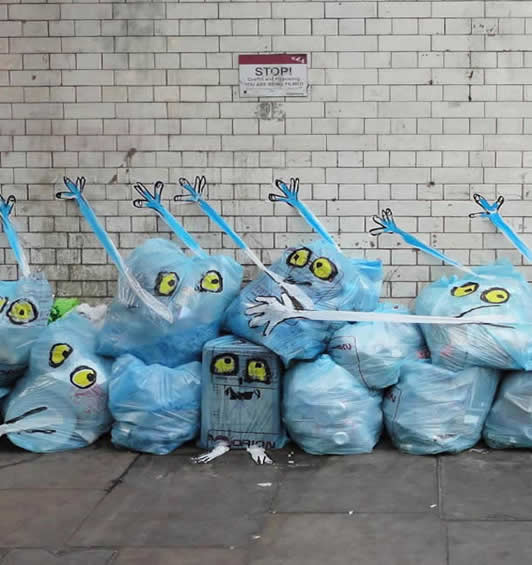
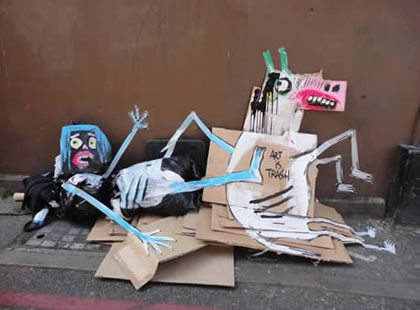
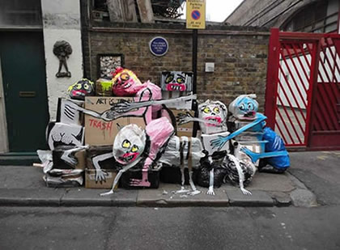

Artista espanhol encontra jeito criativo de transformar lixo em arte
O artista espanhol Francisco de Pájaro utiliza o lixo urbano acumulado nas ruas para produzir obras. A arte intitulada de Art is Trash, começou há sete anos quando morava em Barcelona. A cidade passou a proibir intervenções artísticas nos muros e equipamentos urbanos. Com isso, passou a juntar sacos e caixas de lixo espalhados nas ruas. Entraram tintas, papelão, mobílias e outros objetos descartados. O resultado é uma série de criaturas curiosas que geram um incomodo visual proposital para quem anda pelos locais. A intenção é criticar o modelo de consumo e descarte na sociedade atual.

O que chama a atenção é a efemeridade das obras. Muitas delas chegam a durar cerca de cinco minutos, já que logo são desmontadas e descartadas pelos coletores de lixo. Em alguns casos, a rapidez dos caminhões é tanta que o artista já teve que negociar para dar tempo de concluir e fazer registros dos trabalhos.
